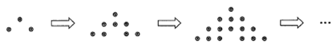

Formulas and Sequences — Recurrence relations & summation
In the figure, the 1st pattern consists of 3 dots. For any positive integer $n$, the $(n+1)$th pattern is formed by adding $(2n+3)$ dots to the $n$th pattern.
Find the number of dots in the 8th pattern.

Tap each step to reveal the reasoning. Try to predict the next line before opening it!
Let $T(m)$ be the number of dots in the $m$th pattern.
We are told:
Goal: find $T(8)$, the number of dots in the 8th pattern.
The extra dots added from the $n$th to the $(n+1)$th pattern is $(2n+3)$. Substitute $n=1,2,\dots,7$:
| $n$ | Extra added to reach next pattern: $2n+3$ |
|---|---|
| 1 | $2(1)+3=5$ |
| 2 | $2(2)+3=7$ |
| 3 | $2(3)+3=9$ |
| 4 | $2(4)+3=11$ |
| 5 | $2(5)+3=13$ |
| 6 | $2(6)+3=15$ |
| 7 | $2(7)+3=17$ |
The extra dots form an arithmetic sequence: $5,7,9,11,13,15,17$ with common difference $2$.
Start from $T(1)=3$ and apply relation (2) repeatedly:
Substituting each equation into the next one (a chain substitution) gives:
Now $T(1)=3$, so
Add the terms:
Or cleverly rearrange: the eight numbers $3,5,7,9,11,13,15,17$ are an arithmetic series, so
Therefore the number of dots in the 8th pattern is $80$, answer C.
| Pattern $m$ | 1 | 2 | 3 | 4 | 5 | 6 | 7 | 8 |
|---|---|---|---|---|---|---|---|---|
| $T(m)$ | 3 | 8 | 15 | 24 | 35 | 48 | 63 | 80 |